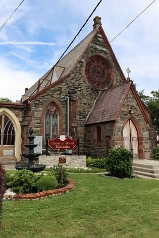

About Us
Faith, family,
service, and transformation.
House of Bread Ministries is an Apostolic church serving the Bronx and Westchester communities from Mount Vernon, New York.
“I am the living bread which came down from heaven.”
St. John 6:51
Our church home · Mount VernonOur story
From a living room gathering to a growing church family.
Founded in 2005 by Pastor Windell Lyne and Evangelist Jacqueline Lyne, the ministry began with a small family gathering in a Bronx living room.
The name House of Bread reflects a ministry committed to meeting spiritual and practical needs through Christ.
Our mission
Reach, restore, and renew through Jesus Christ.
Our mission is to reach people who feel lost, broken, or disconnected and bring hope and restoration through the love of Jesus Christ.
To pursue meaningful transformation in Mount Vernon and neighboring communities while inviting people into new life in Christ.
Our Values
How we seek to live the gospel.
Our values guide how we worship, serve, pray, and care for one another.
Our beliefs
What we believe.
Explore the foundational truths that guide our church and Christian living.